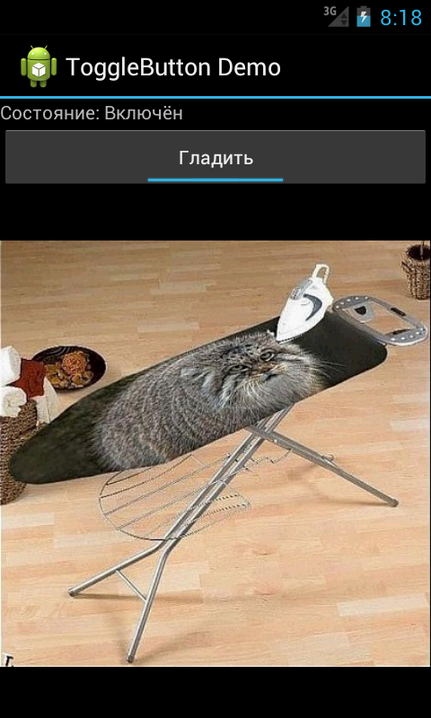

ToggleButton (Кнопка-переключатель)
Компонент ToggleButton по своей функциональности похож на флажок (checkbox) или переключатель (radiobutton) - это кнопка, которая может находиться в одном из двух состояний: активна (On) или неактивна (Off). По умолчанию на кнопке написано "Оn", если она активна, и "Off" - если нет. По внешнему виду это обычная кнопка с декоративной полоской в нижней части, которая подсвечивается в включенном состоянии (имитация LED-индикатора).
Находится в разделе Widgets:
Если надписи On/Off для вашей программы не подходят, их можно изменить при помощи свойств Text on (атрибут android:textOn) и Text off (атрибут android:textOff). Поскольку надписи Оn и Off на кнопке-переключателе являются отдельными атрибутами, атрибут android: text не используется, он доступен, так как наследуется от ТextView, но в данном случае без него можно обойтись. В программном коде им соответствуют методы setTextOff() и setTextOn().
По умолчанию, ToggleButton находится в выключенном состоянии, чтобы его "включить", установите свойство checked в значение true. Свойству соответствует метод setChecked(boolean checked).
Основное событие ToggleButton — изменение состояния кнопки onCheckedChanged().
Напишем демонстрационную программу с использованием ToggleButton. Добавим на форму метку, изображение и кнопку-переключатель:
<?xml version="1.0" encoding="utf-8"?>
<LinearLayout xmlns:android="http://schemas.android.com/apk/res/android"
android:layout_width="match_parent"
android:layout_height="match_parent"
android:orientation="vertical" >
<TextView
android:id="@+id/tvInfo"
android:layout_width="match_parent"
android:layout_height="wrap_content"/>
<ToggleButton
android:id="@+id/toggleButton"
android:layout_width="match_parent"
android:layout_height="wrap_content"
android:checked="false"
android:text="ToggleButton"
android:textOff="Не гладить"
android:textOn="Гладить" />
<ImageView
android:id="@+id/imageView"
android:layout_width="match_parent"
android:layout_height="match_parent"
android:src="@drawable/gladcat" />
</LinearLayout>
Для создания обработчика события изменения состояния кнопки необходима реализация интерфейса CompoundButton.OnCheckedChangeListener. Интерфейс имеет единственный метод onCheckedChanged(), который необходимо переопределить в нашем классе. При обработке события для определения состояния используется параметр isChecked.
package ru.alexanderklimov.togglebuttondemo;
import android.app.Activity;
import android.os.Bundle;
import android.widget.CompoundButton;
import android.widget.CompoundButton.OnCheckedChangeListener;
import android.widget.TextView;
import android.widget.ToggleButton;
public class ToggleButtonDemoActivity extends Activity implements
OnCheckedChangeListener {
ToggleButton toogleButton;
TextView tvInfo;
@Override
public void onCreate(Bundle savedInstanceState) {
super.onCreate(savedInstanceState);
setContentView(R.layout.main);
toogleButton = (ToggleButton) findViewById(R.id.toggleButton);
tvInfo = (TextView) findViewById(R.id.tvInfo);
toogleButton.setOnCheckedChangeListener(this);
}
@Override
public void onCheckedChanged(CompoundButton buttonView, boolean isChecked) {
if (isChecked)
tvInfo.setText("Состояние: Включён");
else
tvInfo.setText("Состояние: Выключен");
}
}

Создайте два изображения для каждого состояния кнопки-переключателя в формате 9-patch, например, btn_toggle_off.9.png и btn_toggle_on.9.png. Разместите картинки в папке res/drawable-hdpi/ (или в других).
Далее создаются два XML-файла в папке res/drawable:
btn_toggle_bg.xml (отвечает за фон):
<?xml version="1.0" encoding="utf-8"?>
<layer-list xmlns:android="http://schemas.android.com/apk/res/android">
<item android:id="@+android:id/background" android:drawable="@android:color/transparent" />
<item android:id="@+android:id/toggle" android:drawable="@drawable/btn_toggle" />
</layer-list>
btn_toggle.xml (выводит нужное изображение в разных состояниях)
<?xml version="1.0" encoding="utf-8"?>
<selector xmlns:android="http://schemas.android.com/apk/res/android">
<item android:state_checked="false" android:drawable="@drawable/btn_toggle_off" />
<item android:state_checked="true" android:drawable="@drawable/btn_toggle_on" />
</selector>
Также можно определить стиль и тему для кнопки. В файле res/values/themes.xml пропишите:
<!-- Overwrite the ToggleButton style -->
<style name="Widget.Button.Toggle" parent="android:Widget">
<item name="android:background">@drawable/btn_toggle_bg</item>
<item name="android:textOn">ON</item>
<item name="android:textOff">OFF</item>
<item name="android:disabledAlpha">?android:attr/disabledAlpha</item>
</style>
Сообщите системе, что нужно использовать новый стиль для кнопки:
<style name="YourThemeName" parent="@android:Theme.Black">
<!-- Tell Android to use a custom style when creating a ToggleButton -->
<item name="android:buttonStyleToggle">@style/Widget.Button.Toggle</item>
<!-- Perhaps more theme items here...? -->